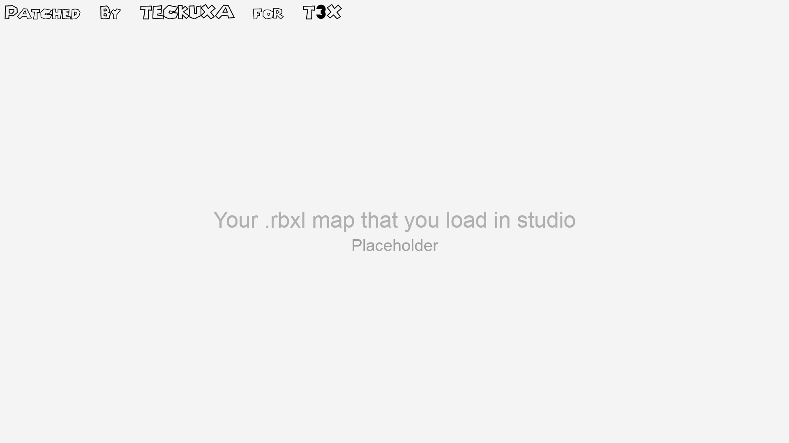

Welcome to Roblox Studio 2016M — a preserved build of the classic Roblox Studio from mid-2016. Comes with classic interface, sounds, feel and nostalgia.
Use the Build tools, Scripts, and Explorer panel just like in the old days. You can find preinstalled maps that you can play in T3X folder -> Maps.